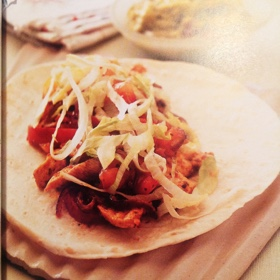

1 tbsp olive oil
1 big red onion minced
2 tomatoes (cetait 2 poivrons)
1 tsp tomato paste (cetait poivron)
1 lb chicken cut in thin stripes
1 pinch paprika
1 pinch piment
1 pinch cumin
1/4 tsp oregano
4 wheat tortilla
1/2 iceberg lettuce chopped
Salsa:
1 small red onion minced
2 big advocado well ripe
4 minced tomatoes
10.5 oz drained white beans
2 tbsp minced coriander
1 lime
Salsa: Dice the advocado, add the diced tomatoes, the minced onion, the beans, the minced coriander and the juice and zest of the lime.
Heat olive oil in a wok and sautee the onions, tomatoes and tomato paste. Add the chicken, paprika, piment, cumin, origan and keep cooking for 5 min until the chicken is cooked.
Meanwhile, wrap the tortillas in aluminum and heat them for 5 min in the oven.
Add the chicken on the tortiallas, add salsa and lettuce. Wrap the tortilla and serve.